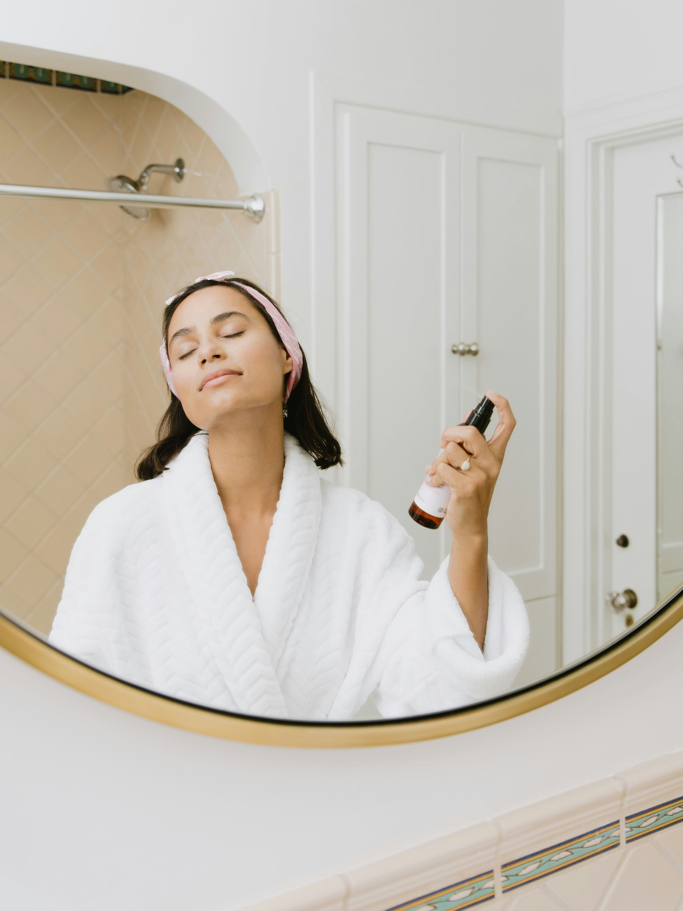

شناخت سد دفاعی پوست؛ نقطه شروع مراقبت
[خلاصه مقاله پس از نگارش و بررسی توسط متخصص در این قسمت قرار میگیرد.]

زیباییِ شما، با حفظ آنچه شما را منحصربهفرد میکند. تجربهای آرام، دقیق و متناسب با نیازهای واقعی پوست.
نتیجهای که همچنان شبیه خودتان باشد.
معرفی خدمات جراحی، لیزر، جوانسازی و تناسب اندام؛ جزئیات هر خدمت پس از تأیید نهایی کلینیک تکمیل میشود.

جراحی جراحیهای زیبایی برای نیازهای متنوع پوست رزرو مشاوره لیزر
لیزر و رفع موهای زائد
مراقبت متناسب با نوع پوست
رزرو مشاوره
لیزر
لیزر و رفع موهای زائد
مراقبت متناسب با نوع پوست
رزرو مشاوره
 لیزر
لیزر
اطلاعات و شرایط پس از تأیید کلینیک
رزرو مشاوره
جوانسازی
جوانسازی و شادابی پوست
با ارزیابی تخصصی و مشاوره
رزرو مشاوره
تناسب اندام
تناسب اندام و فرمدهی بدن
نقطه شروع یک مسیر آگاهانه
رزرو مشاوره
لیزر
لیزر
اطلاعات و شرایط پس از تأیید کلینیک
رزرو مشاوره
جوانسازی
جوانسازی و شادابی پوست
با ارزیابی تخصصی و مشاوره
رزرو مشاوره
تناسب اندام
تناسب اندام و فرمدهی بدن
نقطه شروع یک مسیر آگاهانه
رزرو مشاوره
خدمات نهایی، موارد منع مصرف و توصیههای درمانی باید توسط تیم دارای صلاحیت کلینیک بررسی و تأیید شوند.
در نیوا، مسیر مراقبت با شنیدن، شناخت و انتخاب آگاهانه آغاز میشود. هر پیشنهاد باید با ویژگیهای فردی، خواستهها و نظر متخصص هماهنگ باشد.
توجه به هماهنگی چهره و ویژگیهای فردی، بدون وعدههای اغراقآمیز.
فرصتی برای بیان نیازها و بررسی گزینههای متناسب با هر فرد.
شفافیت درباره فرایند، محدودیتها و مراقبتهای لازم پیش و پس از درمان.

رویکردی آرام؛ انتخابهایی سنجیده.


تجربهای دلپذیر با اطلاعات روشن، زمانی برای پرسش و پاسخ، و فضایی که برای احساس آرامش طراحی میشود. جزئیات فضا و مراحل مراجعه پس از تأیید کلینیک در این بخش قرار میگیرند.
برای مشاوره برنامهریزی کنیدمراقبت خوب، با شنیدن آغاز میشود.
 تصویر پرتره واقعی را جایگزین کنید
تصویر پرتره واقعی را جایگزین کنید
این بخش برای معرفی صاحب امتیاز، پزشک یا متخصص اصلی کلینیک در نظر گرفته شده است.
[یک معرفی کوتاه و شخصی درباره نگاه شما به زیبایی، مراقبت و ارتباط با مراجعهکنندگان در این بخش قرار میگیرد.]
[توضیح تکمیلی درباره مسیر حرفهای، ارزشها و شیوه مشاوره. اطلاعات واقعی و قابل تأیید درج شود.]
مقالات آموزشی و روایتهای مسیر مراقبت، پس از بازبینی تخصصی، در این بخش منتشر میشوند.
روایت تصویری
[خلاصه مقاله پس از نگارش و بررسی توسط متخصص در این قسمت قرار میگیرد.]

[خلاصه و نکات کلیدی تأییدشده را اضافه کنید.]
[مقاله آموزشی با محتوای پزشکی تأییدشده جایگزین شود.]
این بخش جایگاه نمونهکارهای تأییدشده کلینیک است. تصاویر فعلی نمایشیاند و باید با عکسهای واقعی، دارای رضایت و توضیحات دقیق جایگزین شوند.


روایتها باید واقعی باشند؛ بدون فیلترهای گمراهکننده، ادعای تضمینی یا اطلاعات شناسایی بدون رضایت.
این قسمت برای معرفی تیم واقعی کلینیک آماده است. نام، عنوان شغلی، مدارک و سوابق فقط پس از تأیید رسمی درج شوند.
[عنوان حرفهای و تخصص تأییدشده]
[مدارک و سوابق تأییدشده][عنوان حرفهای و تخصص تأییدشده]
[مدارک و سوابق تأییدشده][عنوان حرفهای و تخصص تأییدشده]
[مدارک و سوابق تأییدشده][پس از دریافت رضایت مکتوب، متن واقعی و تأییدشده تجربه مراجعهکننده در این بخش قرار میگیرد.]
هیچ نظر یا نتیجهای تا زمان ارائه محتوای واقعی بهعنوان تجربه واقعی نمایش داده نشود.
درباره خدمات، رزرو و اطلاعات کلینیک.
خدمات منتخب شامل مراقبت و جوانسازی پوست، فیشیال، لیزر، زیبایی چهره و مشاوره پوست است. جزئیات نهایی هر خدمت پس از تأیید کلینیک تکمیل میشود.
از فرم درخواست مشاوره در پایین همین صفحه استفاده کنید. فرم فعلی نمایشی است و پس از اتصال به سیستم رزرو، روش پاسخگویی کلینیک در همینجا توضیح داده میشود.
در نیوا از وعدههای اغراقآمیز پرهیز میشود. هر پیشنهاد پس از ارزیابی فردی و با نظر متخصص دارای صلاحیت مطرح میشود.
اطلاعات مراجعه در پایین صفحه قرار میگیرد. نشانی، ساعت کاری و شماره تماس رسمی پس از تأیید کلینیک جایگزین میشوند.
در بخش «تخصص، با مسئولیت». نام، عنوان و مدارک تنها پس از تأیید رسمی درج میشوند.
فرم زیر نمایشی است. پس از دریافت اطلاعات واقعی، شماره تماس و روش پاسخگویی کلینیک، آن را به سیستم رزرو یا ایمیل متصل کنید.